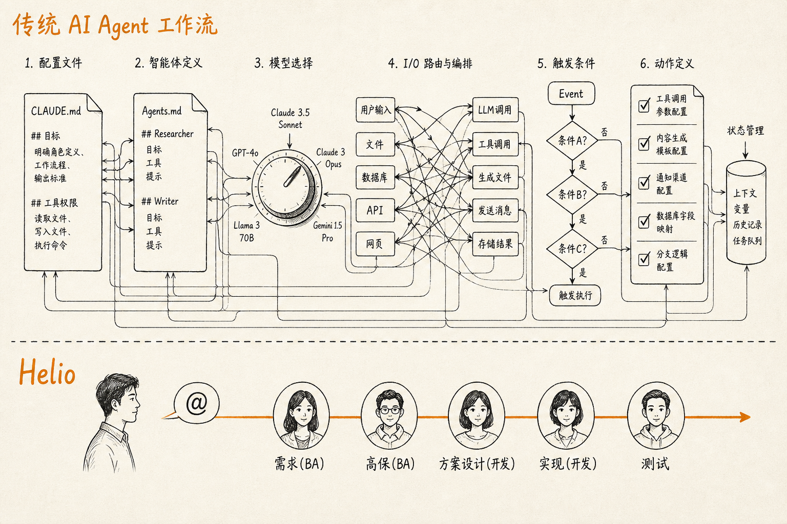

Open Dashboard · Co-TeamAI
给规划、BA、开发、测试与 AI：同一套契约怎么读、验收清单一处维护、月初排期到月底上线过程产物怎么协同。契约树就是 .teamai/docs/（不是仓库根第二份 docs/，也没有符号链接）。新人介绍见 share.html。终端用户操作手册见 user-manual。
| 路径 | 用途 |
|---|---|
| product/README.md | 产品是什么：定位、用户、模块、边界（不含仓库实现） |
| product/requirements.md | 仅已交付需求基线 |
| product/roadmap/ | 按状态分夹，每夹一份 README：进行中 / 已完成 / 计划中 / 搁置 / 不做 |
| proposals/Pxxx-name/ | 主键不搬家；根 README 是地图；内部 req/ · design/ · test/ |
| design/architecture.html | 已实现的 4A 现行架构 |
| design/architecture.md | 4A 检索索引（HTML 不进 BM25） |
| design/openapi.yaml | FE↔BE 机器可读硬契约 |
| process.md | 协作规范正文 |
| prototypes/hi-fi/ | 当前增量高保（可改） |
| prototypes/snapshots/ | 历史冻结；看 SNAPSHOT.md 的提案 / kind / 相对上一版 |
| prototypes/VERSIONS.md | 用 Pxxx 识别该对照哪一版 |
status: done，或 git tag（例如 v0.4.0）。
本页所在的树就是 TeamAI 单仓的 docs 资源。探索出来的落地规范（process / Pxxx / 4A / 高保）直接放在 .teamai/docs/，和 rules/、skills/、culture.md 同级，不要符号链接，也不要在仓库根再放一份 docs/。
| 路径 | 角色 |
|---|---|
| .teamai/docs/ | 产品与工程契约（本树） |
| .teamai/rules/ · skills/ · learnings/ | 短规则、研发技能、0→1 踩坑；不另写真相 |
| .teamai/culture.md | teamai pull 时注入 |
| .teamai/teamai.yaml | sharing.docs.localDir 必须是 ./.teamai/docs |
对外品牌 Co-TeamAI；目录与命令仍是 .teamai/ / teamai。clone 后在仓库根执行 teamai init .。docs / hooks / mcp 用普通 git commit。不要对这棵树跑 teamai uninstall 的 docs 清理。
同一套真相，按角色只换入口，不复制文档。聊天记录不是长期真相。协作图：od-coteamai-role-flow.png。
交接：@需求(BA) → @高保(BA) → @方案设计(开发) → @实现(开发) → @测试。方案设计由开发写，BA 不写模块/接口/数据流。

| 角色 | 目标 | 先打开 | 产出 / 交给谁 |
|---|---|---|---|
| 规划 & BA（需求） | 锁范围与验收 ID | product/README.md · roadmap · 提案 README · 可选 req/ |
挂条、yaml criterion；不写 提案 design/ → @高保 |
| 高保设计 | 交互可对照 | 提案 prototype · hi-fi · VERSIONS.md |
BA：acceptance 快照 → @方案设计（开发） |
| 方案设计 | 技术怎么做可对照 | 提案 design/ · openapi.yaml |
开发写流程/模型/边界/契约 + 代码落点 → 实现 |
| 开发（实现） | 按入口改代码 | README「开发入口」→ 冻结快照或 hi-fi → OpenAPI | FE/BE/dsh + architecture → @测试 |
| 测试 | 判定能否上线 | test/acceptance.yaml + prototype-snapshot |
只改 status / evidence；pass 才交付 |
| AI | 跟当前角色走同一条链 | AGENTS.md + .teamai/rules/ | 当轮回写 Pxxx；未验收不进 requirements / 4A |
status / gates，不要看聊天或最新 hi-fi。
实例：确认后对话看不到图怎么配 → 收进进行中的 P015（PR-REAL-23），不新开号。BA 写判据，开发写方案，实现后再验收。
本仓 .teamai/docs/ 和 mattpocock/skills 不是同一类东西，也不能互相替代。
技能包管怎么干活（Agent 怎么问清楚、写 spec、拆票、TDD）。.teamai/docs/ 管这个产品的事实是什么（做到哪、对照哪份原型、怎么验收）。.teamai/rules/ 与 skills/ 只是把同一套规范注入 AI，不另开第二份契约。
| 本仓 .teamai/docs/ | mattpocock/skills | |
|---|---|---|
| 性质 | 团队知识沉淀与交付契约 | Agent 可调用的通用工程工作流 |
| 内容 | 路线图、Pxxx、验收、4A、OpenAPI、高保 | /grill-with-docs、/to-spec、/implement、/tdd、一次性 prototype |
| 何时变 | 随产品和提案变 | 随工程方法变，与看板业务无关 |
| 开发入口 | 提案 README「开发入口」 | 你输入的技能命令，例如 /implement |
| 技能 | 本仓落点 | 注意 |
|---|---|---|
/grill-with-docs、CONTEXT.md、ADR |
多轮对话回写 Pxxx；术语可进 product/README.md | 产品决策写进提案，不要另开一套 ADR 树 |
/to-spec |
proposals/Pxxx-name/ | 本仓 spec 就是提案，不要再生成一份独立 spec |
/to-tickets |
acceptance.yaml 的可执行项 |
票是 Pxxx 的切片，主键仍是 Pxxx |
技能里的 prototype |
一次性 HTML，用来回答一个设计问题 | 本仓高保是可验收基线（hi-fi + snapshots），不要用 throwaway 流程维护 |
/implement |
先读「开发入口」，再改代码 | 技能管节奏（TDD、review），不管定义需求 |
/triage 与 issue 状态 |
product/roadmap/ 状态夹 | 进度以路线图为准；GitHub / Linear 只是可选镜像 |
/setup-matt-pocock-skills |
问「文档存在哪」时指向 .teamai/docs/ | 不要再造 docs/ai/、specs/、平行 CONTEXT 世界 |
契约仍只在 docs/。下面这些是 Cursor 从 0 到 1 沉淀的干活方式和踩坑，给下一轮 AI 和协作者用，不另写真相。
| 路径 | 何时用 |
|---|---|
| skills/od-rd-loop/ | 先判断：讨论、高保、写提案、实现、验证，禁止没对齐就改产品代码 |
| skills/od-write-proposal/ | 新建或改 Pxxx、开发入口、波及、acceptance.yaml |
| skills/od-implement-proposal/ | 按开发入口实现 in-progress 提案 |
| skills/od-hi-fi/ | 改高保、打快照；告诉用户 8765 而不是 5173 |
| skills/od-local-verify/ | 启动三套服务、真实点击路径、权限用新用户测 |
| learnings/ | 先对齐再动手、聊天不是真相、三轨对话、质量闸、权限 fail-closed |
test/acceptance.yaml。increment 快照，定稿打 acceptance 快照并写入 prototype-snapshot。done。roadmap/状态夹 README 挂条 → proposal 开发入口 → hi-fi 增量 / snapshot 冻结 → OpenAPI → 代码 + architecture → requirements → 该行挪到 done/design/ 还是 test/acceptance.yaml、对照 hi-fi 还是冻结快照、改哪些代码。提案目录不随状态搬家。
test/acceptance.yaml 的阻塞项全部 pass，才可回写 requirements 并把提案标记为 done。
| 类型 | 做法 |
|---|---|
| 小型纯 UI、契约不变 | 可不建提案；改变长期架构或能力基线时再更新 architecture/requirements |
| 文档与线上不符 | 无提案；改 openapi 或改代码 |
| 笔误 | 直接改对应文件 |
每个在途提案 README 用一张表写清影响面，避免把下一轮想法做进当前范围（例如 P007 壳层不要顺便做 P008 权限工作台）。
| 列 | 写什么 |
|---|---|
| 依赖 | 必须先存在的提案或已交付能力 |
| 改动面 | FE / BE / Harness / OpenAPI / 高保，以及明确「不改」什么 |
| 回归验收 | 本提案和依赖提案里要复测的 PR-* ID |
| 不要动 | 已拆到其他提案的范围 |
高保是文档资产，放在 .teamai/docs/prototypes/。当前增量只改 hi-fi/；历史冻结看 VERSIONS.md 与 snapshots/（只读，看 SNAPSHOT.md 的提案 / kind / 相对上一版）。清单见 MANIFEST.md。预览：.teamai/docs/prototypes/hi-fi/start.sh。
| 文件 | 改什么 |
|---|---|
| shared/shell.css · shell.js | 左栏 + 顶栏产品壳（各页统一引用） |
| workbench.html | 工作台 |
| conversation.html | 对话 |
| datasource.html | 数据源 |
| dataset.html | 数据集 |
| dashboard.html | 仪表盘 |
| report.html | 报告 |
cd .teamai/docs/prototypes && ./snapshot.sh YYYY-MM-DD-slug "说明" Pxxx increment|acceptance。acceptance 快照才是实现对照版。
test/acceptance.yaml 是测试与发版共用的那一份清单，不是第二份需求说明书。能维护的前提：判据、路径、状态、证据只写在 yaml 里。
| 谁 | 动什么 | 何时 |
|---|---|---|
| BA / 规划 | 相关 ID、标题、criterion | 锁范围；范围变更时必须改 yaml 并记修订 |
| 测试 | 只改 status / evidence | 高保验收、代码验收、月底放行 |
| 开发 / AI | command_or_path、code gate 的命令 | 实现对照路径变化时 |
done 之后 yaml 冻结，只追溯。PR-SH-10 这类稳定 ID。有四层，不要合成一层，也不要再加第五套版本文件。
| 层 | 机制 | 干什么 |
|---|---|---|
| 产品里程碑 | 提案 milestone: v0.x · 状态夹 | 这个大版本要交付哪些 Pxxx |
| 当前进度 | in-progress/ | 正在做的条目与当前验收 ID |
| 交互 | VERSIONS.md + snapshots | increment 是过程档；acceptance 才是实现对照 |
| 发版 | git tag（如 v0.5.0） | 整仓可回放；含当时的 requirements |
requirements.md 始终只有一份：当前已交付全集。不要维护长期并存的 requirements-v0.4.md。看旧版：git show v0.4.0:.teamai/docs/product/requirements.md。
进度只看状态夹，每夹一份 README。当前开发看 in-progress/。不要按月建文件，也不要为每条再建 Pxxx.md。验收 ID 写在提案 test/acceptance.yaml。
过程产物不要平行繁殖：不要另开「迭代需求说明书」「测试用例.xls」「发版 checklist.doc」。
| 过程 | 已有产物 |
|---|---|
| 排期 | 路线图状态夹 |
| 需求 / 边界 | 提案 README（范围、非目标、波及） |
| 交互 | hi-fi 增量 → 定稿 snapshot |
| 怎么做 | 提案内 design/ |
| 契约 | design/openapi.yaml |
| 是否可上线 | test/acceptance.yaml 的 status |
| 已上线真相 | requirements + architecture + git tag |
gate: hi-fi；通过后打 acceptance 快照。architecture.html 同提交。pass 才回写 requirements。未做完保持 in-progress。done，可打 git tag。例如 P007 产品门只剩 PR-SH-10：in-progress 表的「当前范围」写这一条；P008 同夹但范围写「尚未开始」，开发就不要动它。PR-SH-10 过了只回写这一条，P007 仍可留在进行中。
P007: 用 AppShell 替换 ModuleTopbar。blocker_of_done: true 且 status: pass 的项；未 pass 的不得进 requirements。roadmap 挂条 → 提案目录内写需求与详细设计 → 接受后先契约再实现 → 验证时同提交更新 architecture → 验收后写 requirements → 提案标 done。
小改可无提案；先实现验收，仅在改变应用边界或长期能力时更新 architecture/requirements。
先看 进行中 确认仍在该夹，再打开 提案开发入口。实现对照入口表里的原型；验收前 requirements 不写「已支持对话分析」。
高保 ID 已 pass 只说明交互冻结。当前范围若只含 PR-SH-10，只回写这一条；P007 保持 in-progress，权限工作台仍走 P008。
design/ 只保留 architecture.html、architecture.md（检索索引）与 openapi.yaml；未实现详细设计只进提案目录。test/acceptance.yaml 是验收状态唯一真相；README 不复制长表。提案根上只留 README，按角色分 req/ · design/ · test/。done 提案只读追溯，不驱动新开发；部分交付时提案保持 in-progress。docs/。